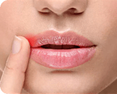

От желчного пузыря зависит работа всего желудочно-кишечного тракта, сила иммунитета и очищение от токсинов и избыточного холестерина.
Что вы получите после нормализации желчеоттока:
Здоровый стул с чувством полного очищения кишечника.
Перестанет тошнить по утрам и после еды, исчезнет изжога.
Выровняется женский цикл, станет безболезненным.

Уйдут заеды на губах, кожа перестанет сохнуть и трескаться.
Выровняется женский цикл, станет безболезненным.
Нормализуется вывод токсинов и отработанных гормонов.
Вы станете бодрее, получая 100% полезных веществ из пищи.
Лучше всего раз разобраться в работе собственного желчного пузыря, чем мучиться от симптомов всю жизнь.